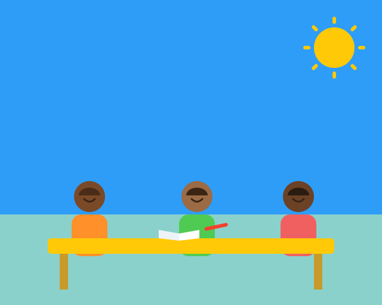

Why do YOU matter?
Students are on the frontline of change.
The water crisis is real: 1 in 10 people have no access to clean water. Many kids skip school just to walk for unsafe water to drink.
Your generation has the energy, the reach, and the chance to help end this — and make history doing it.